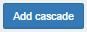
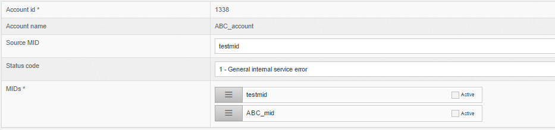
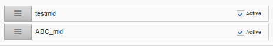
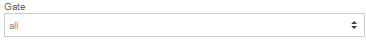
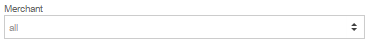
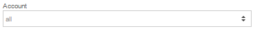
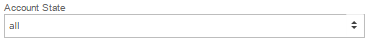
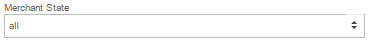
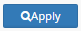

Section: Home Cascading
Note | Cascading payment feature is created at section MMS Account List
For more details press here .
For adding Cascading payment feature press the button 
| Field | Description |
|---|---|
| Account id * | id of the account in admin panel |
| Account name | name of the account |
| Source MID | main MID which is being received transactions |
| Status code | status of error code of the transaction by main MID. By selected error code MIDs will be switched to the next acquirer. |
| MIDs * | MIDs which are able to reroutes the transaction to the next acquirer |
Screenshot from Admin panel :

Press the checkbox near MIDs for adding them to reroutes list

All "active" MIDs will take a part in reroutes the transaction to the next acquirer.
For saving the settings press the button
For searching Cascading payment feature select filters
| Field | Description | Screenshot |
|---|---|---|
| Gate | searching by gate |  |
| Merchant | searching by merchant |  |
| Account | searching by account |  |
| Account state | searching by status :
|
 |
| Merchant state | searching by status :
|
 |
After selecting filters press the button 
Example of searching result
| Gate Name | Merchant Name | Merchant Account Name | MId | Response Code | Cascaded MIDs | Actions |
|---|---|---|---|---|---|---|
| Test Gate | Test merchant | Test account | test_mid | Bank MID doesn't support the currency(3015) |
|
|
| Live Gate | Live merchant | Live account | live_mid | Bank cannot process selected amount(3106) |
|
Details:
Button - allows to update cascading settings.
Button - allows to delete cascading settings.